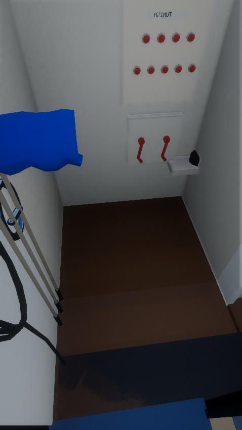
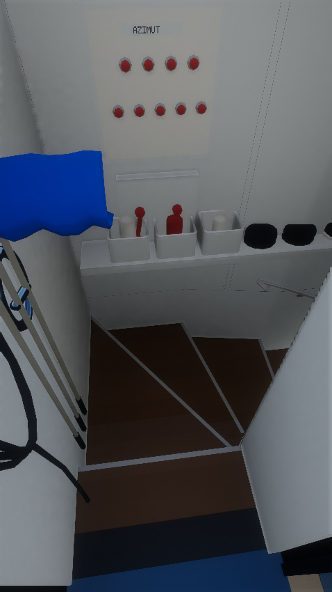

Se retiró el paso horizontal añadido. El umbral enlaza con los peldaños de giro y el tramo descendente; los controles, la repisa y el pasamanos vuelven a formar parte del mismo acceso.


Puerta exterior → giro → tramo recto → antesala → puerta de máquinas.
Video de 15 segundos y 300 cuadros exportados a 20 fps. La cadencia del archivo no mide el rendimiento del juego en un teléfono.Recorrido de ida y vuelta con teclado y tacto, dos puertas, las otras cuatro escaleras, cerramientos y caras visibles del render. Se conservan las dimensiones globales del yate y la posición del generador.
| Medida | r26 | r27 |
|---|---|---|
| Triángulos | 193,839 | 194,997 |
| Bytes de geometría | 9,104,422 | 9,175,902 |
| Lotes del yate / pasarela | 13 / 2 | 13 / 2 |
| Texturas y pasadas nuevas | — | 0 |
El aumento de memoria de geometría es inferior al 1 %. Se mantienen agua rápida, resolución y AA. Las dimensiones locales siguen siendo estimaciones visuales.
Chrome cloud limita las texturas por etapa y no puede renderizar el mapa completo. Las imágenes usan integración Vulkan nativa; las comprobaciones de navegador ejercitan navegación y controles de producción.Datos de la comparación